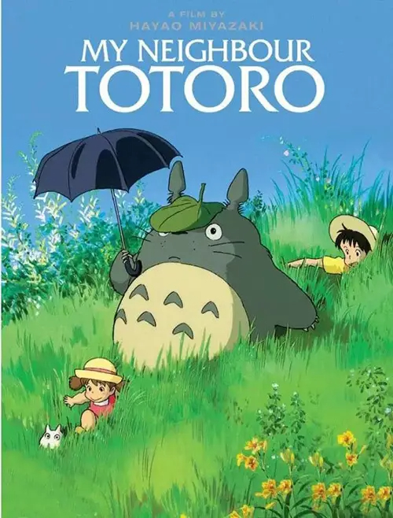
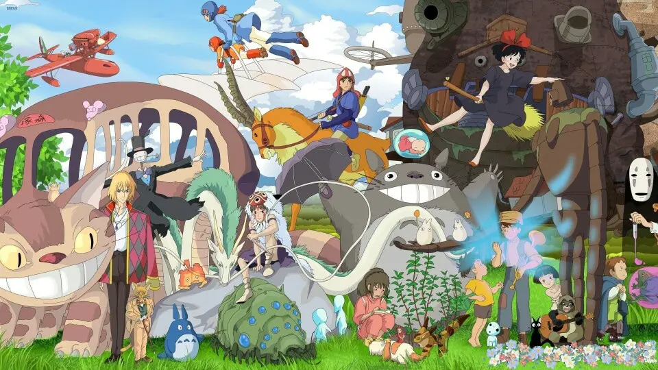
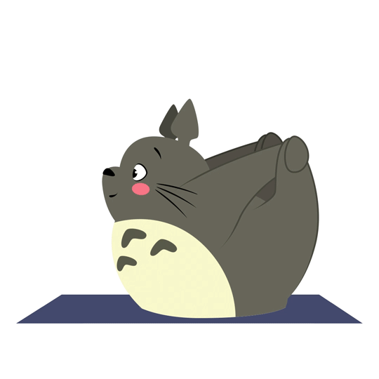
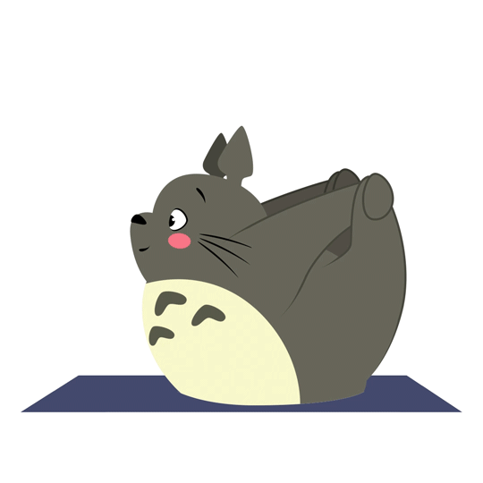

电影介绍

《龙猫》
1988年日本宫崎骏执导的动画电影
是由宫崎骏执导，日高法子、坂本千夏、糸井重里配音的动画电影，于1988年4月16日在日本上映。高清重制版于2018年12月14日在中国公映。
该片讲述了草壁达郎的妻子草壁靖子生病住院后，他带着草壁皋月与四岁的妹妹草壁梅回到乡间居住的故事。
作者介绍
宫崎骏
1941年1月5日出生于日本东京都文京区，日本动画师、动画制作人、漫画家、动画导演、动画编剧。毕业于日本东京学习院大学政治经济部。
2013年执导《起风了》该片荣获第37届日本电影学院奖最优秀动画作品奖等8项大奖 ，也是其最后长篇作品。同年9月6日宣布引退 。
2014年11月8日荣获第87届奥斯卡金像奖终身成就奖。
吉卜力工作室
吉卜力工作室（Ghibli），是一家日本动画工作室。成立于1985年中旬，原附属于德间书店，位于日本东京都近郊的小金井市，约有300名员工，由导演宫崎骏以及他的同事高畑勋、铃木敏夫等一起统筹，作曲家久石让也为吉卜力工作室的许多作品制作过电影音乐。
工作室标识为其代表作品《龙猫》等。

《宫崎骏全家福》
关于龙猫
角色形象
龙猫是居住在森林中的巨大怪物。草壁梅独自一人在家中玩耍的时候，偶然进入森林之后发现了龙猫。龙猫乐观开朗，性格温顺。
角色能力
龙猫具有着精灵般的魔法的力量。他曾经帮助姐妹二人使种子发芽，还曾经帮助草壁皋月找回了迷路的草壁梅。
剧情简介
为了方便妻子草壁靖子养病，草壁达郎决定带着两个女儿草壁皋月和草壁梅搬到草壁靖子所在疗养院附近的乡下，父女三人入住了一间年久失修的老房子。小姐妹俩很快发现看似平凡无奇的乡下有很多神奇的事物，无人居住的房屋里能聚能散还能飞的“煤灰”、森林里的小精灵、森林的主人龙猫和笑口常开的猫巴士。
一天，妹妹草壁梅和姐姐草壁皋月吵了架之后，便独自出走去找自己生病住院的妈妈，途中却迷了路。姐姐在四处寻找无果的情况下，只好求助于龙猫。善良而温和的龙猫唤来猫巴士，载着姐姐找到了迷路的妹妹，乘着龙猫电车，妹妹把亲手摘的玉米送给了妈妈，希望她早日康复。


 
